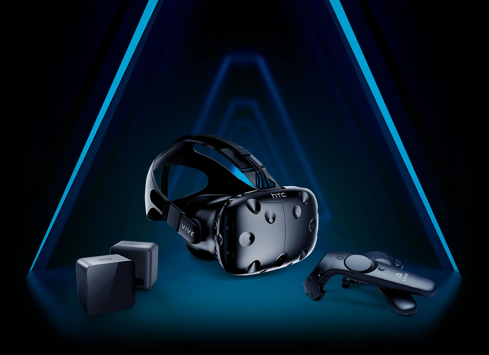
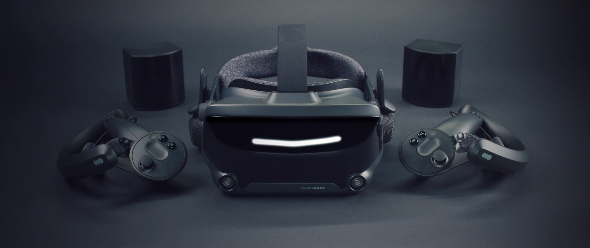
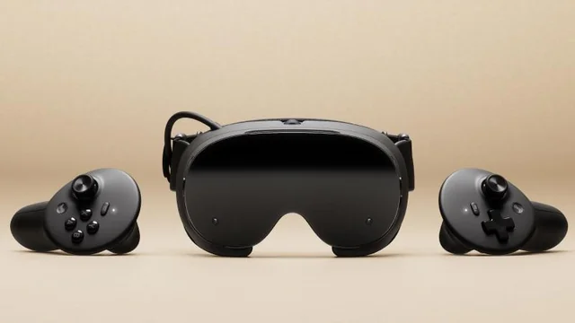

Background
Steam Frame is Valve Corporation's third series of AR Headset. The Valve Corporation was founded by Gabe Newell and Mike Harrington in 1996, building a trillion dollar company in 2026.
Supporting Steam Frame's advance technology is valve's rich history and experience with virtual technology.
Starting in the early 2000s, virtual technology have always been a topic in creation. This accumulated to 2016 when valves begins their expedition into the virtual gaming market, releasing two fundamental parts that led to the creation of Steam Frame and its inevitable success.

Released on April 2016, the first fundamental part released was HTC Vive; the first series of AR Headset created and released by Valve Corporation.
Boosting, at the time, advance technology. Weighing over 500 grams (over a little over 110 pounds), the LED Panels that make up the headset was 1080x1200 each, with a performance value of 90Hz and 110 FOV (field of view).
Despite costing $799 when the headset was release, HTC Vive sold over 15,000 units in its first day, by the end of year, the amount was over 420,000 units.
The second fundamental part released alongside HTC Vive and one that cannot be forgotten is the games one can play on the device.
Developing for years, Valve Corporation created the SteamVR platform where virtual games were developed and published.
The numbers of games playable on the SteamVR already boost over 700. The titles included within and not limited are Google Earth, Onward and Vanishing Realms.
To this day, those early classic still have active users numbering over hundreds every day.

Following the support of HTC and SteamVR, Valve Corporation created Valve Index and released it on 2019.
Compared to Valve's first headset series, Valve Index can be said to be more advanced. With large LCD panels number 1440x1600 each and a performance value of 144Hz and 108-130 FOV, it could be consider better but not by much.
There was two huge differences between Valve Index and HTC Vive, that would be its cost and weight.
The first is that Valve Index was significantly heavier then HTC Vive. Weighing over 800 grams or about 180 pounds. This increase weight was to accommodate the more advance and dense hardware.
The second aspect and one that impact Valve Index success was its cost. When HTC Vive was released in 2016, its cost was just $799, a quite affordable price given the times.
But increasing by 200 units, Valve Index was release with $999 as its cost value. This significantly impact its market as it only sold less then 150,000 units in its first year.
While 150,000 units was a lot, compared to HTC Vive's first year performance of 420,000 units, it pale in comparison.

With the lesson learn from the success of HTC Vive and the failure of Valve Index, Steam Frame can be said to a successful technology to hit the market.
Weighing less the 500 pounds and costing just $599, Steam Frame combine the weight and cost value of HTC Vive and the high performance and technology of Valve Index.
And with over 7000 games on SteamVR in 2026, Steam Frame is set to be a very successful product.